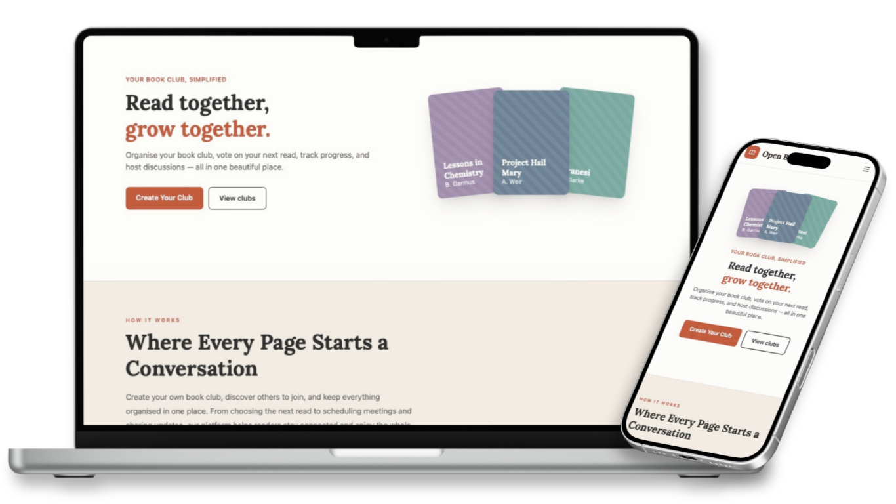
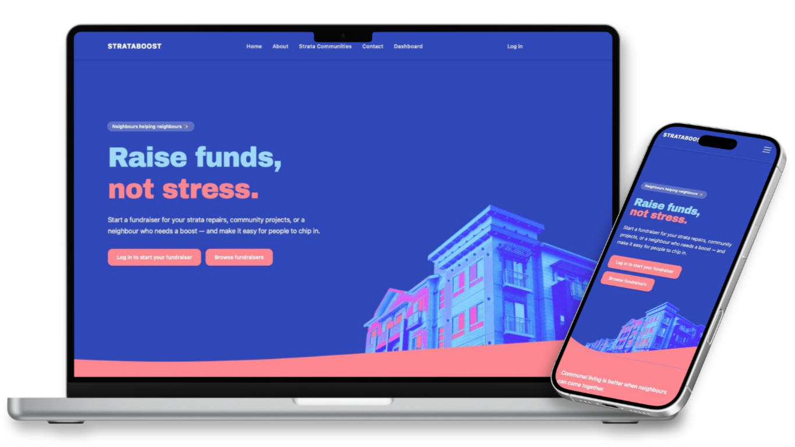
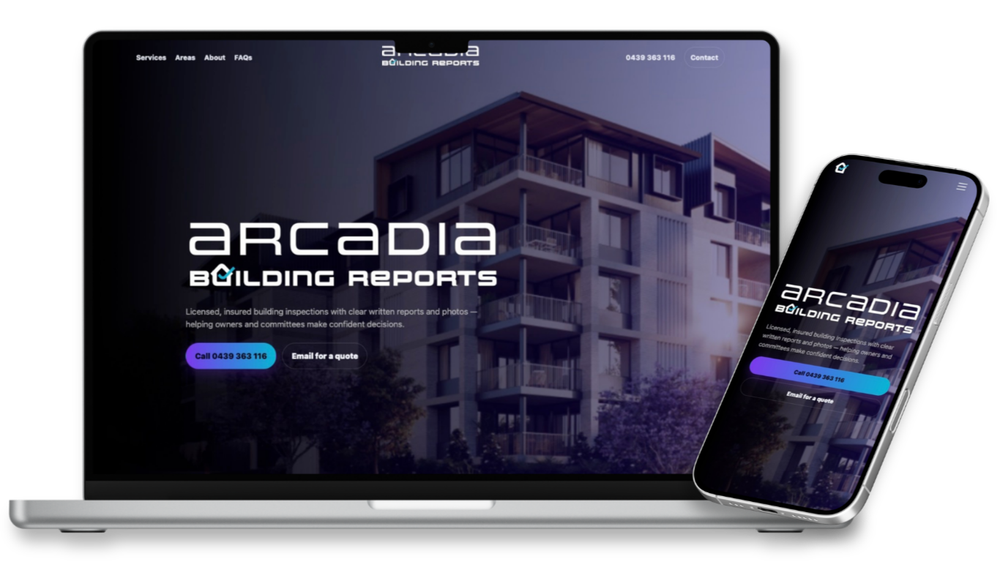
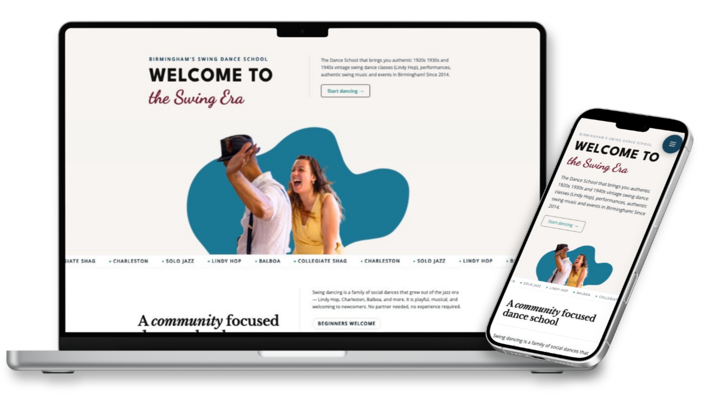

Hi, I’m a junior developer with a background in ophthalmic research. I made the leap into tech after working on a project with DeepMind, where I had the chance to collaborate with some incredible developers. That experience introduced me to the creative and problem-solving side of software development.
I’m passionate about clean design, intuitive user experiences, and writing code that’s both functional and elegant. I love learning, whether it’s picking up a new framework or finding better ways to approach a problem. Outside of coding, I enjoy photography and anything that keeps me curious and creative. I’m excited to keep growing as a developer and to be part of building things that make a difference.
I have a strong preference for easy to use, intuitive UX/UI
Websites don't have to be static. I love making pages come to life.
Layouts that work on any device, big or small.
An all-in-one book club platform so organisers and readers can create or join public and private clubs, discover books through the Google Books API, schedule meetings with RSVP, track reading with milestones, and keep announcements and chapter-by-chapter discussions in one place instead of scattered chats and spreadsheets. Built with Django REST Framework and JWT authentication on Heroku (PostgreSQL), and a React single-page app on Netlify using React Router, React Query, Axios, and Tailwind CSS.

A community crowdfunding platform for strata and body-corporate buildings: residents can create fundraisers for repairs and shared projects, and neighbours can pledge money or skills to help reach the goal. Built with React 19 and Vite 7, React Router 7 for client-side routing, and Tailwind CSS 4, consuming a Django REST API for auth, buildings, fundraisers, and pledges.

A multi-page marketing site for building and strata reporting in Brisbane and South East Queensland—services (safety audits, maintenance and roof reports, Chapter 3 Part 5 (fire and essential safety measures), sinking fund inputs, insurance valuations), service areas, team and FAQs, testimonials, and a quote-led contact path. Built with semantic HTML, modular CSS, and JavaScript for layout and interactions, plus PHP for the contact workflow, together with sitemap and robots.txt for basic SEO.

A ground-up WordPress redesign for a Birmingham Lindy Hop school—authentic vintage swing classes from beginners to advanced, workshops and socials with live music, performances, and hire for private and corporate events. The new site uses a bespoke theme template, Advanced Custom Fields for structured, repeatable content, and admin workflows tuned so editors can update classes, events, and policies without fighting the CMS.
currently building
